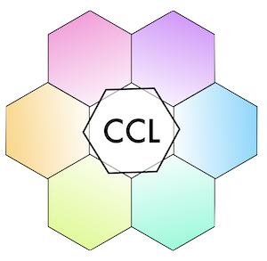

Experiments
This project currently involves two experiments. The design and motivation for each are described in the honors thesis manuscript.
If you are interested in participating in the experiments, then you can try them out here. There is no compensation for participation except for our appreciation that you have contributed to our research project. If you agree to participate and you complete the experiment, then your data will added to the public data repository in this project. All data that is collected is completely anonymous.
We plan to leave these links here on a permanent basis. This will allow us to assess how the results stabilize across large groups of participants.
Experiment 1: Mixed stimulus duration
Estimated time:
15-20 minutes
This is a directed forgetting task for pictures of natural scenes. You will be shown many pictures and asked to remember or forget each picture. Then you will be given a memory test.
Trying again?
We are interested in data from first-time attempts, so please click the first link (which you can do only once). But, if you want to try again, go for it here:
Experiment 2: Blocked stimulus duration
Estimated time:
15-20 minutes
This is a directed forgetting task for pictures of natural scenes. You will be shown many pictures and asked to remember or forget each picture. Then you will be given a memory test.
Trying again?
We are interested in data from first-time attempts, so please click the first link (which you can do only once). But, if you want to try again, go for it here: